Indie
Sobre
Jogos indie (abreviação de "independentes") são jogos desenvolvidos por pequenos estúdios ou desenvolvedores individuais, sem o apoio financeiro de grandes editoras ou empresas de jogos. Esses jogos geralmente possuem características únicas, criativas e inovadoras, pois os desenvolvedores independentes têm mais liberdade para explorar novas ideias e mecânicas, sem as pressões comerciais típicas das grandes produções.
Principais características dos jogos indie:
Criatividade e inovação:
Como não precisam seguir tendências de mercado ou
agradar um grande público,
muitos jogos indie exploram mecânicas, histórias e estéticas que fogem do convencional.
Alguns exemplos incluem o uso de pixel art, narrativas experimentais ou jogabilidade minimalista.
Baixo orçamento:
Sem o financiamento massivo das grandes empresas, os jogos
indie costumam ter orçamentos menores,
o que reflete em gráficos mais simples ou em um número limitado de recursos. Contudo, essa limitação
muitas vezes
leva a soluções criativas.
Desenvolvimento por equipes pequenas:
Muitos jogos indie são criados por uma
única pessoa ou por equipes pequenas,
o que pode resultar em um maior senso de autoralidade, já que o criador ou grupo geralmente tem
controle total sobre
a visão artística e a execução do projeto.
Publicação independente:
Ao contrário de jogos produzidos por grandes empresas,
que passam por um rigoroso processo de aprovação e publicação, os jogos indie geralmente são
distribuídos de forma independente, em plataformas como Steam, itch.io, GOG, ou em consoles como
Nintendo
Switch e PlayStation.
Apoio de comunidades:
Muitos jogos indie são financiados por campanhas de
financiamento coletivo em plataformas
como Kickstarter ou Indiegogo, com a ajuda direta de fãs e comunidades que apoiam o desenvolvimento.
Alguns jogos indie notáveis:
Celeste:
Um jogo de plataforma focado na superação de desafios e na narrativa emocional.
Hades:
Um roguelike com excelente design de combate e narrativa imersiva.
 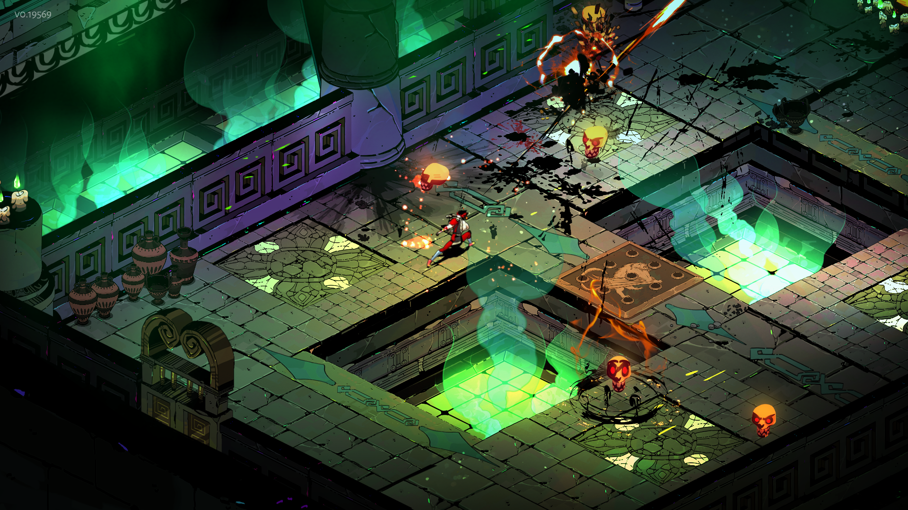
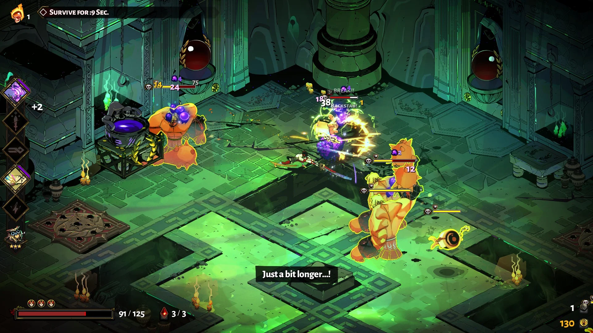
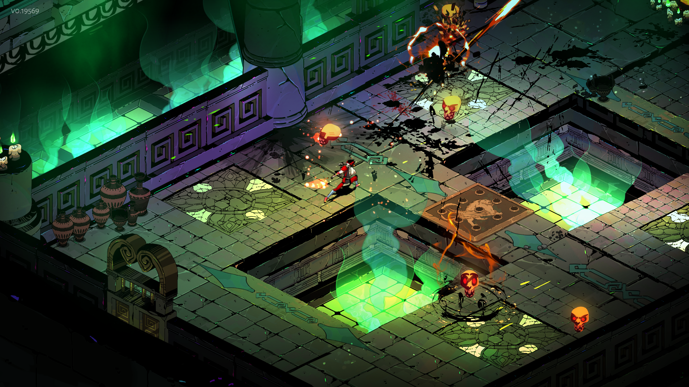
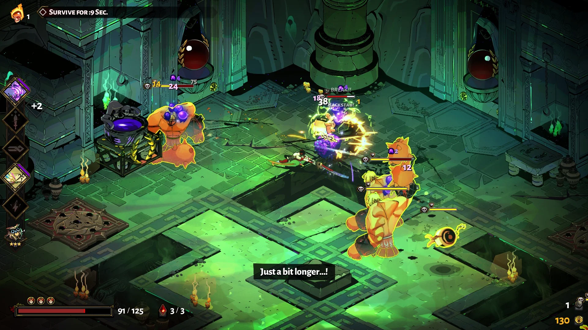
Undertale:
Um RPG aclamado por sua história envolvente e abordagem inovadora ao combate.
 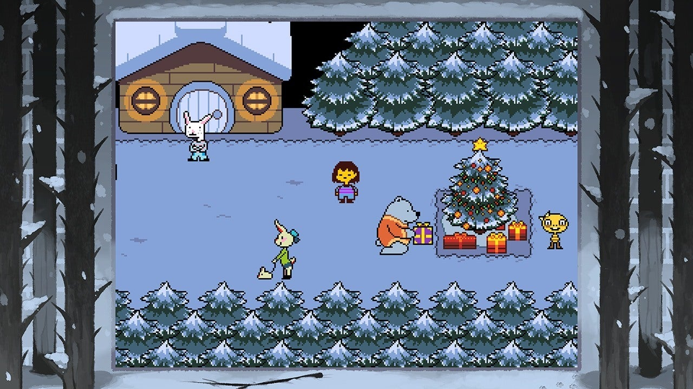
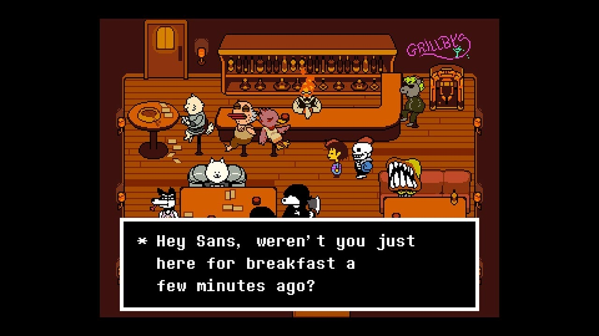
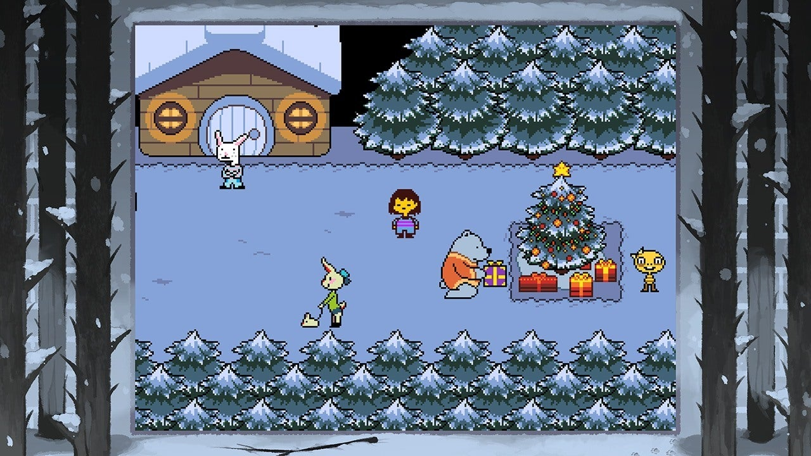
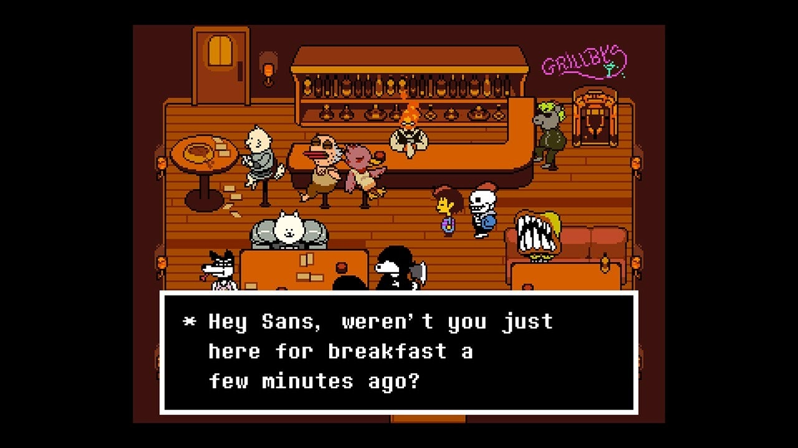
Stardew Valley:
Um simulador de fazenda que se tornou um grande sucesso, oferecendo uma experiência relaxante e personalizada.
 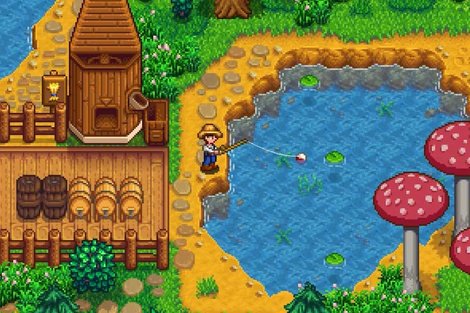
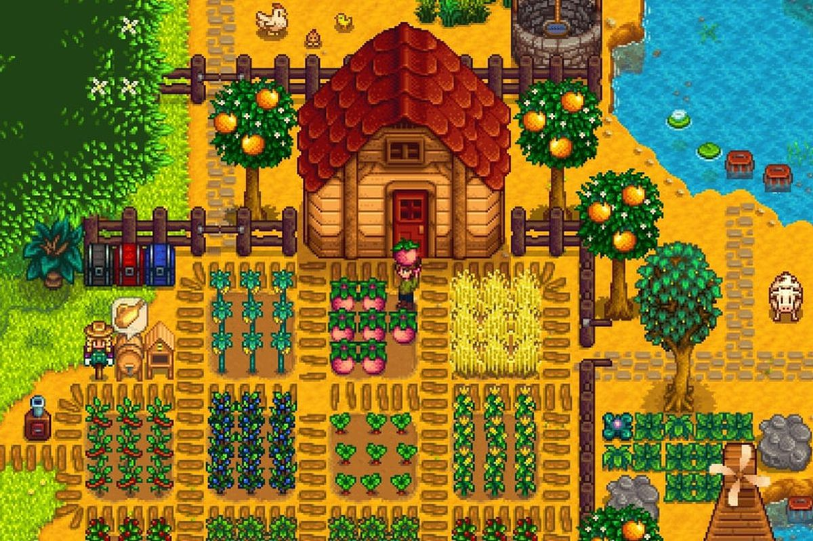
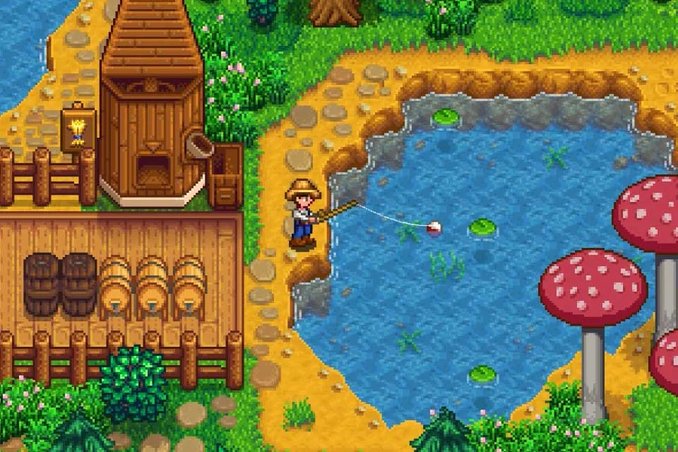
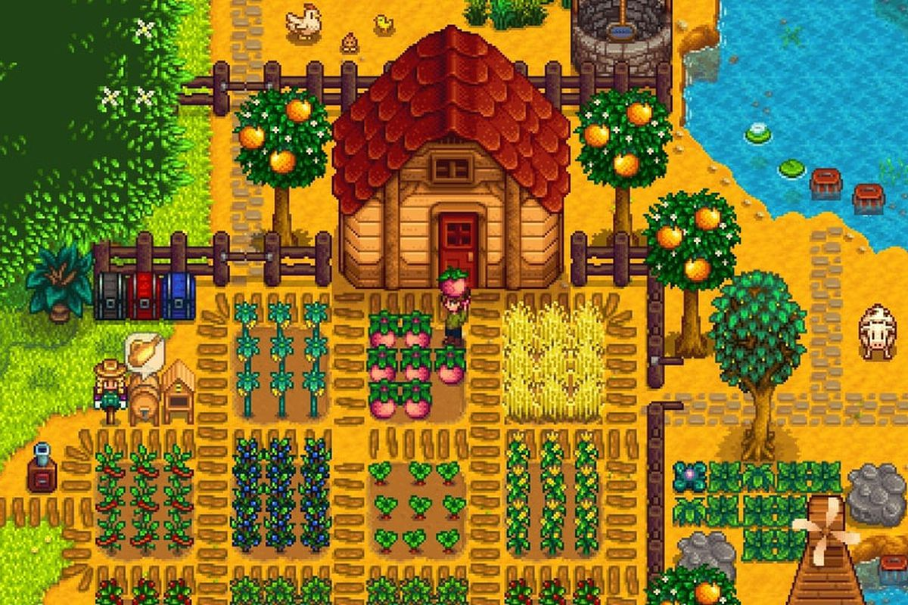